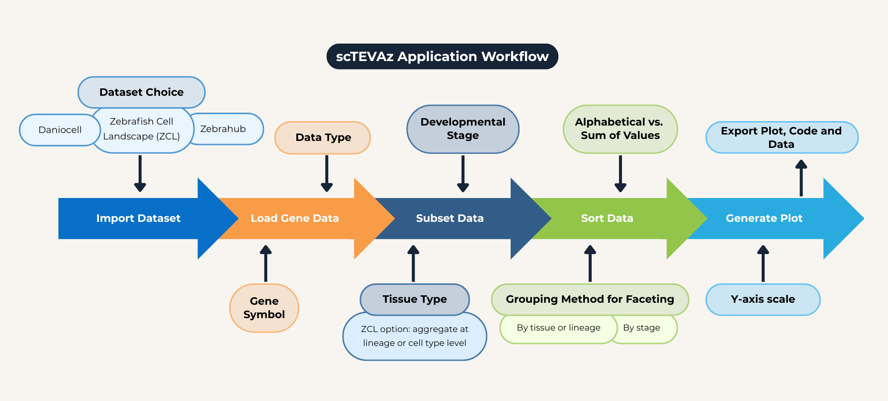

The landscape of zebrafish research has been transformed by the emergence of comprehensive single-cell transcriptomic atlases. These resources provide a high-resolution molecular map of development, regeneration, and tissue homeostasis, moving us closer to a "digital fish" model. In simple terms, these atlases provide very useful expression pattern information for unstudied or little-studied genes without the need to carry out any experiments. Even for many well-known and extensively studied genes, putting the scRNA-seq expression data into a new context of particular lineages, tissues or cell types can stimulate new insights, which might not have been possible when using other expression databases.
Developed by the Farrell Lab (NICHD), Daniocell is the premier resource for tracking the high-resolution temporal progression of zebrafish development. This atlas Integrates data from 490,000 cells collected at 62 developmental stages (3.3 to 120 hpf). The cells are distributed across 500+ annotated clusters. This atlas is especially important for researchers focused on organogenesis because Daniocell provides the most dense temporal sampling available, capturing the "movie" of early life from zygotic activation to a swimming larva.
ZCL was generated using Microwell-seq (Han/Guo labs) and offers a broader physiological perspective that extends into the adult fish. It covers 5 stages and 18 different tissue types, including adult organs and larvae. This dataset extends and complements the other two by providing information on how any gene changes its expression pattern into adulthood.
Produced by the Chan Zuckerberg Biohub SF, Zebrahub represents the next generation of multimodal developmental atlases. This dynamic atlas covers 10 developmental stages (10 hpf to 10 dpf). It is the definitive resource for in silico fate mapping and understanding how inter-individual variability impacts cell-state transitions.
In developing scTEVAz, the main motivation was to use existing scRNA-seq datasets to visualize expression of multiple unstudied genes we were working on. The existing tools from the respective atlases were somewhat helpful but were not customizable and inconsistent between different atlases. This limitation led us to develop this tool to provide an easy access to valuable aggregated expression data derived from all available zebrafish scRNA-seq datasets. Integrating these datasets creates a more comprehensive overview since Daniocell, ZCL and Zebrahub provide different stages, cell types and levels of data aggregation.

All inputs and parameters are set using the panel to the left. They have been broadly described in the figure above. We can add here that the "Filter by tissue" or "Filter by stage" input groups contain 'Select all' and 'Deselect all' buttons that can help with defining the selection of data. The other options are based on simple radio buttons. Finally, submission of inputs is controlled by the GENERATE PLOT button. At the right side, there are two tabs: Instructions and Results. Due to the number of inputs, the user needs to provide all of them and then press GENERATE PLOT button. This will result in a plot being generated by ggiraph package on the Results tab. To avoid excessive computations, additional input updates require the GENERATE PLOT button to be pushed again in order to update the output on the Results tab. The output also contains the following download buttons: "SAVE PLOT(PNG)", "EXPORT DATA" and "SAVE THE PLOT CODE". To use these downloaded items, they have to come from the same session, be located in the same folder and the code needs to be run fully on a machine where all required R packages are installed. The main difference between the online scTEVAz tool and the downloaded code is that the latter uses ggplot2 for plotting. The advantage of working with these small gene-specific datasets is that you can further customize your plots as desired and there is no need to work with full datasets which have fairly large hardware requirements.
scTEVAz was developed by Sergey Prykhozhij. If you encounter a problem, please send an email to Sergey Prykhozhij at s.prykhozhij@gmail.com. I can only make it better if you tell me when you encounter a problem.